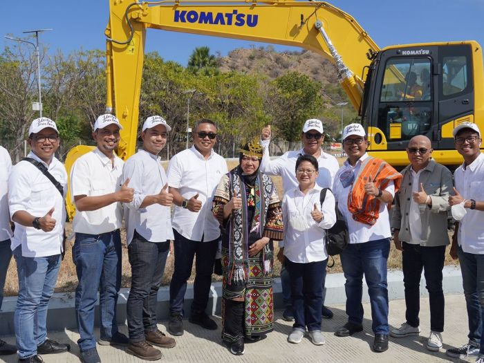

Layanan Terbaik Kami
Sebagai salah satu kontraktor penambangan batubara terbesar di dunia, Pama memiliki kompetensi yang luas & pemahaman mendalam dalam hal pengembangan & operasi tambang batubara yang meliputi :
Explorasi
Pemeteaan Geologi, topografi, eksplorasi pengeboran,evaluasi stockpile, dan studi kelayakan.
Infrastruktur
Gudang, bengkel, kantor, jalan & pendukung, peralatan operasional, jalan pengangkutan, pelabuhan, tumpukan persediaan, dan fasilitas kamp.
Operasi
Peledakan pengeboran, pemindahan lapisan penutup, penggalian penghancuran serta pengangkutan batu bara, dan pengiriman.
Perencanaan
Pemodelan geologi, desain lubang, jadwal produksi, dan urutan tambang.